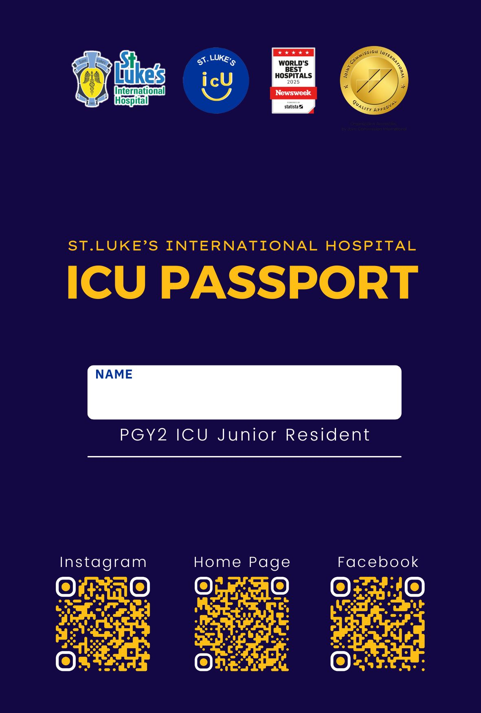
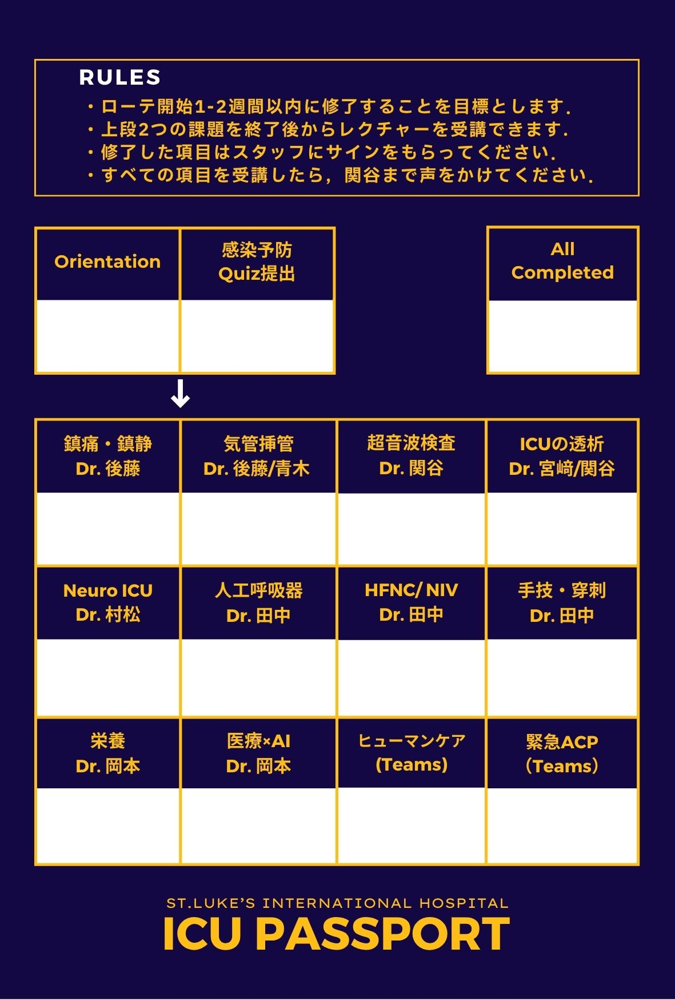

SECTION 1主旨
ICU PASSPORTは，ICUローテーション中の学習を体系的に進めるためのシートです．ローテーション開始初週に名前入りのレクチャーシートを配布します．各レクチャーの担当スタッフに積極的に声をかけて，すべてのシートのコンプリートを目指しましょう！
SECTION 2目指せ！4種のシートを完全制覇！
1
ICU PASSPORT


- Orientation：【必読】ローテ開始前のTo Doをすべて終えれば達成です
- 感染予防Quiz提出：上記オリエンテーションの内容に含まれます
- 各レクチャー：受講後にスタッフ医師のサインをもらってください
- すべての項目を修了した場合、達成となります。
| まず終わらせる | |
| Orientation（ローテ開始前のTo Do） | 必須 |
| 感染予防 Quiz 提出 | 必須 |
| スタッフ対面レクチャー（受講後にサイン） | |
| 1.鎮痛・鎮静 | Dr. 後藤 |
| 2.気管挿管 | Dr. 後藤／青木 |
| 3.超音波検査 | Dr. 関谷 |
| 4.ICUの透析 | Dr. 宮崎／関谷 |
| 5.Neuro ICU | Dr. 村松 |
| 6.人工呼吸器 | Dr. 田中 |
| 7.HFNC／NIV | Dr. 田中 |
| 8.手技・穿刺 | Dr. 田中 |
| 9.栄養 | Dr. 岡本 |
| 10.医療×AI | Dr. 岡本 |
| オンデマンド受講 | |
| 11.ヒューマンケア | Teams |
| 12.緊急 ACP | Teams |
2
10CVCs Challenge Pack

- CV・PICC・バスキャスのいずれかをローテ中に10本以上挿入することを目指す強化パックです。
- 挿入後に監督医師にサインをもらってください
- 10本以上の挿入実績で達成とします。
3
TOP-10 ICU Essential Cases Pack

- 経験が推奨される10疾患/手技の担当を目指す強化パックです。
- 患者を受け持ったら、退室前にスタッフからサインをもらってください。
- 8/10症例以上の経験で達成とします。
| 1 | 低ナトリウム血症 |
| 2 | 敗血症性ショック |
| 3 | 重症肺炎／ARDS |
| 4 | 痙攣重積／てんかん |
| 5 | DKA／HHS |
| 6 | 出血性ショック |
| 7 | 血液透析の導入 |
| 8 | 喘息大発作・COPD増悪 |
| 9 | 消化管穿孔 |
| 10 | 【手技】胸腔・腹腔・腰椎穿刺 |
4
5 RRS or ICU Admission Pack

- ICU相談PHSへの対応（病棟同行）・緊急入室への立ち会いを目指す強化パックです
- 5症例以上の経験で達成とします。
SECTION 3これまでの全4種フルコンプリート達成者
これまでの達成者
2026年度：J2 平井先生 ― 初代達成者
2025年度：なし
制作：ICU 関谷